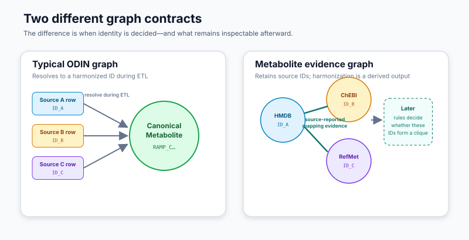
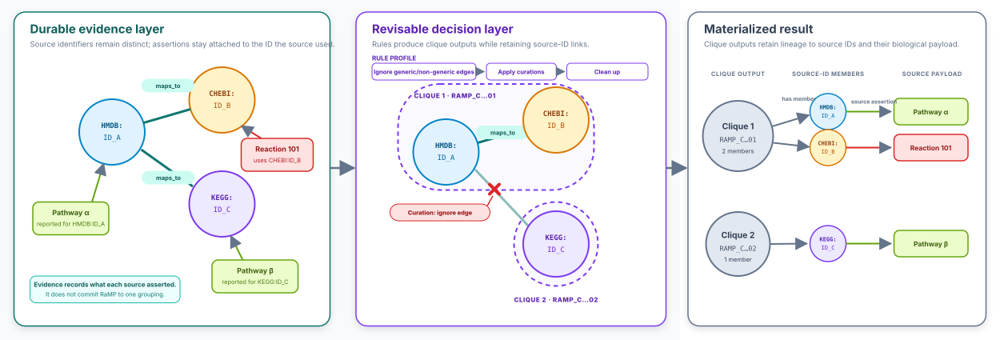
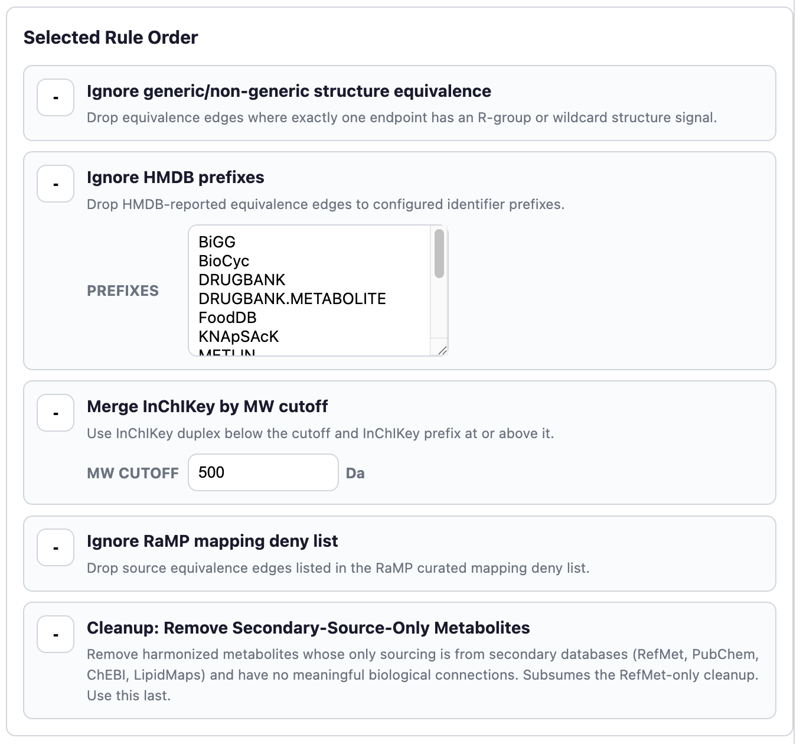
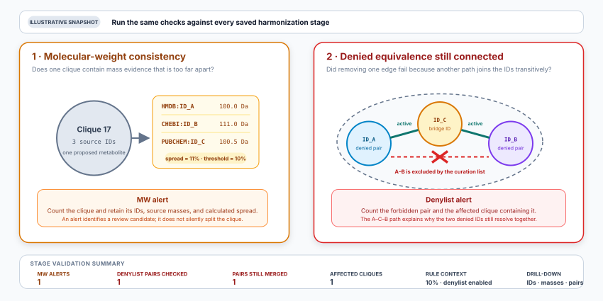
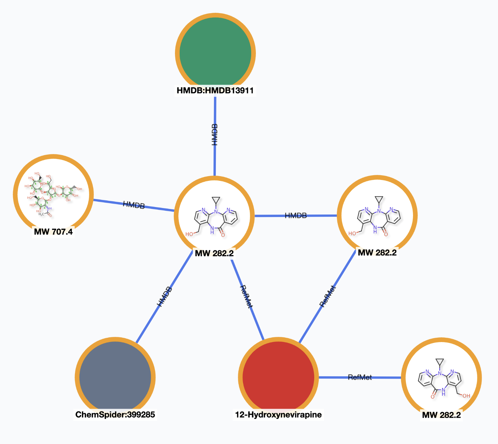
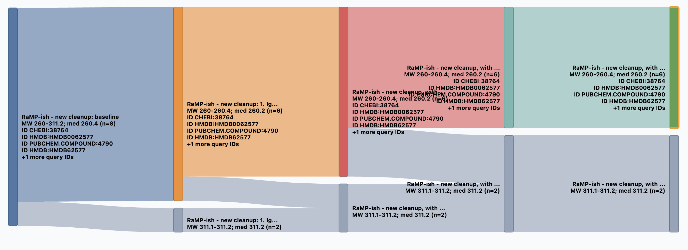
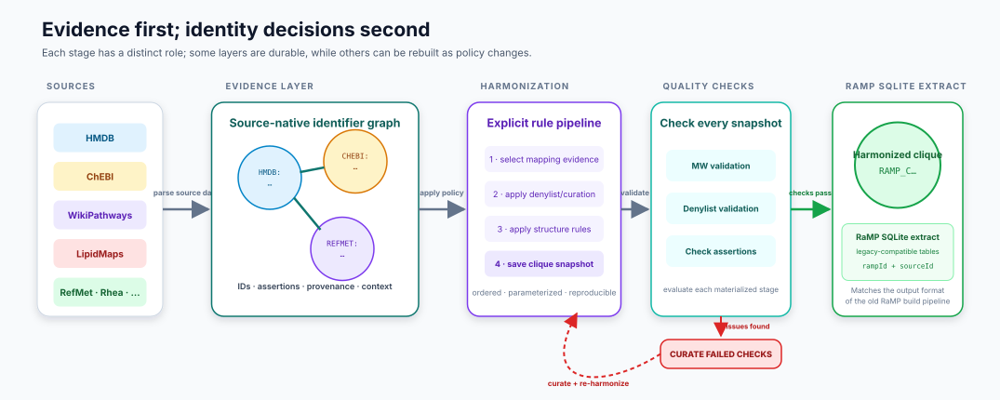

RaMP · metabolite harmonization
From source identifiers to resolved metabolites
A source-faithful evidence graph that separates what data providers assert from the identity decisions RaMP ultimately publishes.
IFX_ODIN1
The key distinction
This is not the usual ODIN graph

Source identity remains first-class2
Architectural contract
The graph records evidence—not the final identity decision

Evidence can remain stable while policy evolves3
Inspectable policy
Rules that were hidden in code become visible

Actual QA Browser view
From implicit build logic to an inspectable policy4
Snapshot validation
Validate each resulting harmonized set

Validation makes problematic cliques reviewable5
Expert review and curation
Questionable equivalences become obvious in context

A 707.4 Da structure is grouped with several 282.2 Da structures
Validation leads directly to evidence-aware curation6
Traceability
Follow a resolved metabolite through the rule pipeline

The Sankey view shows when a clique stays together, splits, or loses members—and retains the source IDs and molecular-weight range at each stage.
Trace the result backward through every decision7
End-to-end flow
Evidence first; identity decisions second

Source assertions → rules → snapshot → RaMP SQLite extract8
The one-sentence explanation
The metabolite harmonization graph preserves source-native identifier lineage, deferring resolution into canonical RaMP metabolites while maintaining traceability to the identifiers and assertions in the original data.
The graph preserves the evidence. The snapshot records the decision. The export carries the lineage.
Metabolite harmonization evidence graph9